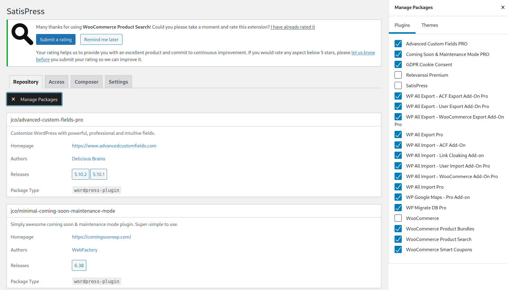
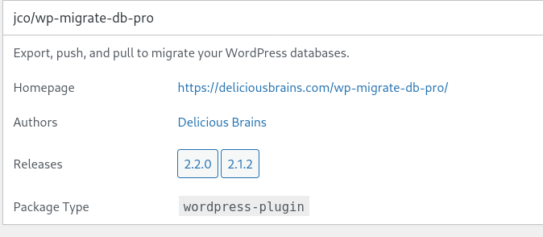

Plugin handling with Composer
Composer documentation
CLI documentation
When to use
Plugins should be handled by Composer in projects that are complex enough that it is better to lock down plugins to certain versions and not allow installing/updating plugins in the back-end.
How to use
Turning on usage of composer plugins in project
change PLUGIN_INSTALL="remote" to PLUTIN_INSTALL="composer" and add - wp-content/plugins to source:under the deploysection.
Turning off usage of composer plugins in project
change PLUGIN_INSTALL="composer" to PLUTIN_INSTALL="remote" and remove - wp-content/plugins from source:under the deploysection.
Locking plugin installation in backend
To lock the installation of plugins from the backend you have to ask WP Engine support to set the constant DISALLOW_FILE_MODS to true in wp-config. php
Installing
https://getcomposer.org/doc/03-cli.md#require
Wordpress repo
Free plugins that are found on the wordpress plugins site can be installed by finding the plugin on the site eg. https://wordpress.org/plugins/wp-google-maps/. To install the plugin you type:
composer require wpackagist-plugin/wp-google-maps
JCO repo
Plugins that do not exist on the official plugins site can be installed by installing them to the JCO repo site https://repo.jco.fi/ Activating automatic updates for the plugin is a good idea so that we get a library of the plugin versions.
Then you go to settings/satispress
There you click Manage Packages and tick the box for the plugin you want to use. All the ticked boxes are available to use so make sure not to untick any plugins unless you are sure they are not in use in any project.

Once you have ticked the box you can find the plugin in the list to the left. The command you use to install the plugin in composer is the line at the top of the box. In this picture it is jco/wp-migrate-db-pro

The install command is:
composer require jco/wp-migrate-db-pro
Installing local plugins
Plugins can be installed locally by adding them to “require-dev” in composer.json or by adding the –dev flag when running composer require.
Version control
Package versions can be defined in composer.json.
jco/advanced-custom-fields-pro": "^5.10.2" means it has to be over 5.10.2.
jco/advanced-custom-fields-pro": "5.10.2" means exactly version 5.10.2
Updates
https://getcomposer.org/doc/03-cli.md#update-u
Check for updates with command: composer outdated
Update specific plugin with composer update “package to update” eg. composer update wpackagist-plugin/wp-google-maps
Update all packages with command: composer update
Note that major updates will not be installed with update eg. 5.10 will not update to 6 but will update to 5.12. To perform major updates you have to change the first number in composer json
Removing
https://getcomposer.org/doc/03-cli.md#remove
To remove a plugin run composer remove vendor/package
eg. composer remove jco/wp-migrate-db-pro